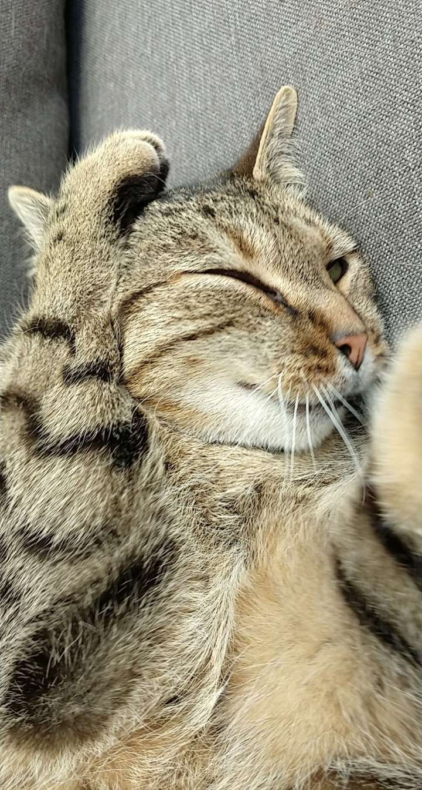
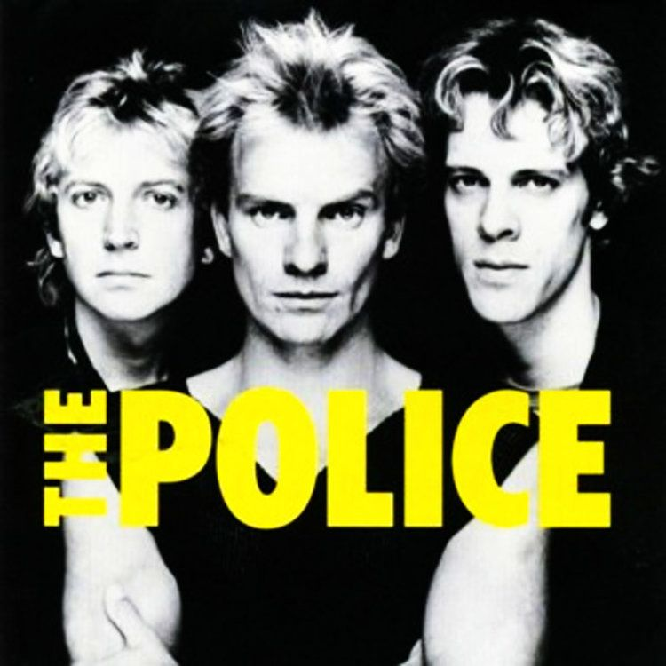
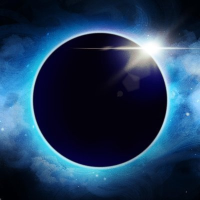

Persoonlijke contactinformatie
-
Naam:
Quinten Steeland -
Adres:
Planeet Aarde, zonnestelsel, Melkweg -
Telefoonnummer:
Tussen0en100 000 000 000 -
E-mail adres:
quinten.steeland@student.vives.be -
Foto:
 Ik stuur mijn kat voor de foto (letterlijk).
Hobbies
"Likes"
-
Favoriete band:
The Police

Link website
Link YouTube -
Favoriete solo artiest:
Soulside Eclipse

Link website
Link YouTube